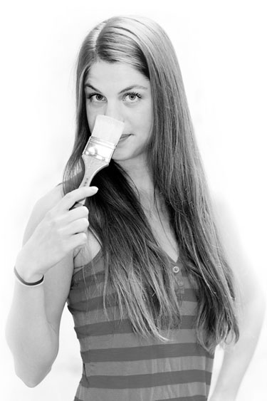
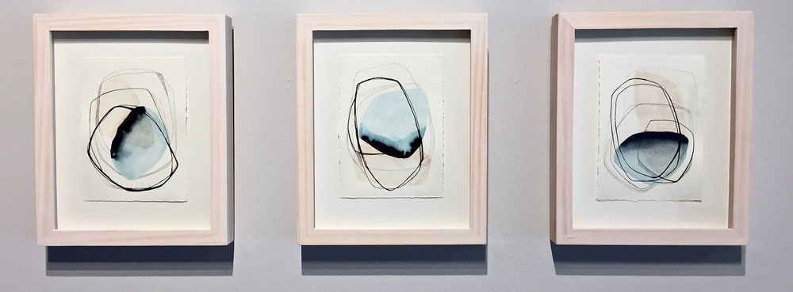
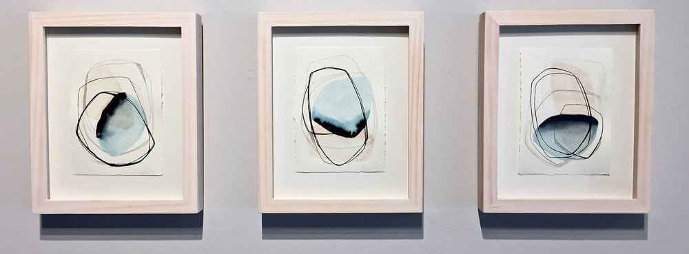

Kiah Denson was born and raised in Austin, TX. She graduated from Colorado College in 2005, earning a BA in Studio Art with a Distinction in Art. Upon graduation, Kiah started her own decorative painting business. After a few years, she began creating fine art again, and has been steadily expanding and exploring her practice ever since. She works with a number of designers, art consultants, galleries and individual collectors across the country, and her art has been featured in several online and print publications.
Kiah lives in the outskirts of Austin, TX surrounded by green fields, trees and streams. She works primarily in her sunny home studio, and also maintains a space at Canopy where she meets with clients and displays her finished work. (by appointment) When she isn't creating art, she can likely be found wandering in nature or swimming with her furry four-legged sidekick, Kali. Please feel free to contact her with questions about available pieces or commissions.

About Kiah
Kiah Denson was born and raised in Austin, TX. She graduated from Colorado College in 2005, earning a BA in Studio Art with a Distinction in Art. Upon graduation, Kiah started her own decorative painting business. After a few years, she began creating fine art again, and has been steadily expanding and exploring her practice ever since. She works with a number of designers, art consultants, galleries and individual collectors across the country, and her art has been featured in several online and print publications.
Kiah lives in the outskirts of Austin, TX surrounded by green fields, trees and streams. She works primarily in her sunny home studio, and also maintains a space at Canopy where she meets with clients and displays her finished work. (by appointment) When she isn't creating art, she can likely be found wandering in nature or swimming with her furry four-legged sidekick, Kali. Please feel free to contact her with questions about available pieces or commissions.
